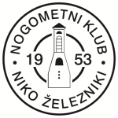
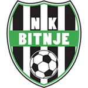

Razpored in rezultati
Tekme
Razpored v pripravi
Nova sezona se začne kmalu — razpored objavimo takoj, ko ga MNZ potrdi.
MAJ 2026
Sobota, 30. 5.
17:00
Merkur GNL - člani · 26. krog
NK Zarica Kranj
Sobota, 23. 5.
17:00
Merkur GNL - člani · 25. krog
Jezero Medvode
četrtek, 14. 5.
17:00
Merkur GNL - člani · 23. krog
NK Zarica Kranj
Sobota, 9. 5.
17:00
Merkur GNL - člani · 22. krog
Tržič 2012
Sreda, 6. 5.
17:00
Merkur GNL - člani · 21. krog
NK Zarica KranjAPRIL 2026
Sobota, 25. 4.
17:00
Merkur GNL - člani · 20. krog
Eltron Preddvor
Sobota, 18. 4.
17:00
Merkur GNL - člani · 19. krog
NK Zarica Kranj
Sobota, 11. 4.
17:00
Merkur GNL - člani · 18. krog
Sava Kranj
Sobota, 4. 4.
17:00
Merkur GNL - člani · 17. krog
NK Zarica Kranj
Niko ŽeleznikiMAREC 2026
Sobota, 28. 3.
17:00
Merkur GNL - člani · 16. krog
Topdom Dom Trade Bitnje
2 : 0
Sobota, 21. 3.
17:00
Merkur GNL - člani · 15. krog
NK Zarica Kranj
Nedelja, 15. 3.
17:00
Merkur GNL - člani · 14. krog
Britof
0 : 2
NOVEMBER 2025
Sobota, 15. 11.
17:00
Merkur GNL - člani · 13. krog
Bled - Bohinj Hirter
Nedelja, 9. 11.
17:00
Merkur GNL - člani · 12. krog
NK Zarica KranjOKTOBER 2025
Sobota, 25. 10.
17:00
Merkur GNL - člani · 10. krog
Velesovo - Cerklje
Sobota, 18. 10.
17:00
Merkur GNL - člani · 9. krog
NK Zarica Kranj
Sobota, 11. 10.
17:00
Merkur GNL - člani · 8. krog
Polet
Sobota, 4. 10.
17:00
Merkur GNL - člani · 7. krog
NK Zarica KranjSEPTEMBER 2025
Sobota, 27. 9.
17:00
Merkur GNL - člani · 6. krog
Kranjska Gora
Sreda, 24. 9.
17:00
Merkur GNL - člani · 5. krog
NK Zarica Kranj
Sobota, 20. 9.
17:00
Merkur GNL - člani · 4. krog
Niko Železniki
2 : 2
Sobota, 13. 9.
17:00
Merkur GNL - člani · 3. krog
NK Zarica Kranj
Sobota, 6. 9.
17:00
Merkur GNL - člani · 2. krog
Visoko
1 : 2
AVGUST 2025
Sobota, 30. 8.
17:00
Merkur GNL - člani · 1. krog
NK Zarica KranjMerkur GNL - člani
2025/2026| # | Klub | T | Z | N | P | Goli | Tč |
|---|---|---|---|---|---|---|---|
| 1 |
|
24 | 19 | 3 | 2 | 98:22 | 60 |
| 2 |
|
24 | 17 | 5 | 2 | 73:34 | 56 |
| 3 | Topdom Dom Trade Bitnje | 24 | 18 | 1 | 5 | 73:29 | 55 |
| 4 |
|
24 | 13 | 7 | 4 | 85:24 | 46 |
| 5 |
|
24 | 14 | 4 | 6 | 75:31 | 46 |
| 6 |
|
24 | 11 | 4 | 9 | 54:41 | 37 |
| 7 |
|
24 | 11 | 1 | 12 | 73:56 | 34 |
| 8 |
|
24 | 9 | 4 | 11 | 42:51 | 31 |
| 9 | Visoko | 24 | 8 | 4 | 12 | 55:54 | 28 |
| 10 | Britof | 24 | 5 | 4 | 15 | 28:48 | 19 |
| 11 | Niko Železniki | 24 | 5 | 2 | 17 | 24:113 | 17 |
| 12 |
|
24 | 4 | 1 | 19 | 30:100 | 13 |
| 13 |
|
24 | 2 | 0 | 22 | 16:123 | 6 |
Vir: MNZ Gorenjska. Osveženo 19. 7. 2026.